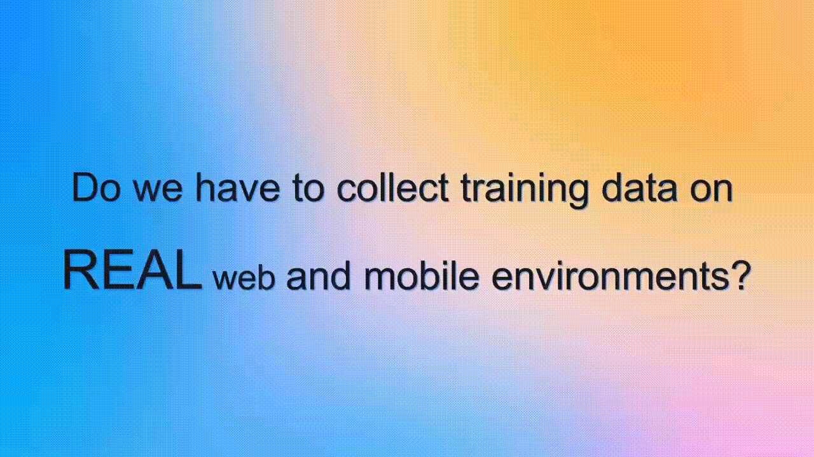

📝 Full publication list:
LLMs as Scalable, General-Purpose Simulators For Evolving Digital Agent Training
Da Yin*†‡, Yiming Wang*†, Yuedong Cui*, Ruichen Zheng*, Zhiqian Li, Zongyu Lin, Di Wu, Xueqing Wu, Chenchen Ye, Yu Zhou, Kai-Wei Chang‡
(* denotes co-first authors, † denotes co-leaders (alphabetical order), ‡ denotes co-advisors)
Spotlight at NeurIPS 2025 @ LAW Workshop

Eliciting and Improving the Causal Reasoning Abilities of Large Language Models with Conditional Statements
Xiao Liu, Da Yin, Chen Zhang, Yansong Feng, Dongyan Zhao
Bridging the Data Provenance Gap Across Text, Speech and Video
Shayne Longpre, Nikhil Singh, Manuel Cherep, Kushagra Tiwary, Joanna Materzynska, William Brannon, Robert Mahari, Manan Dey, Mohammed Hamdy, Nayan Saxena, Ahmad Mustafa Anis, Emad A Alghamdi, Vu Minh Chien, Naana Obeng-Marnu, Da Yin, Kun Qian, Yizhi Li, Minnie Liang, An Dinh, Shrestha Mohanty, Deividas Mataciunas, Tobin South, Jianguo Zhang, Ariel N Lee, Campbell S Lund, Christopher Klamm, Damien Sileo, Diganta Misra, Enrico Shippole, Kevin Klyman, Lester JV Miranda, Niklas Muennighoff, Seonghyeon Ye, Seungone Kim, Vipul Gupta, Vivek Sharma, Xuhui Zhou, Caiming Xiong, Luis Villa, Stella Biderman, Alex Pentland, Sara Hooker, Jad Kabbara
🪄 Agent Lumos: Unified and Modular Training for Open-Source Language Agents
Da Yin, Faeze Brahman, Abhilasha Ravichander, Khyathi Chandu, Kai-Wei Chang, Yejin Choi, Bill Yuchen Lin
Featured by Marktechpost

Consent in Crisis: The Rapid Decline of the AI Data Commons
Shayne Longpre, Robert Mahari, Ariel Lee, Campbell Lund, Hamidah Oderinwale, William Brannon, Nayan Saxena, Naana Obeng-Marnu, Tobin South, Cole Hunter, Kevin Klyman, Christopher Klamm, Hailey Schoelkopf, Nikhil Singh, Manuel Cherep, Ahmad Anis, An Dinh, Caroline Chitongo, Da Yin, Damien Sileo, Deividas Mataciunas, Diganta Misra, Emad Alghamdi, Enrico Shippole, Jianguo Zhang, Joanna Materzynska, Kun Qian, Kush Tiwary, Lester Miranda, Manan Dey, Minnie Liang, Mohammed Hamdy, Niklas Muennighoff, Seonghyeon Ye, Seungone Kim, Shrestha Mohanty, Vipul Gupta, Vivek Sharma, Vu Minh Chien, Xuhui Zhou, Yizhi Li, Caiming Xiong, Luis Villa, Stella Biderman, Hanlin Li, Daphne Ippolito, Sara Hooker, Jad Kabbara, Sandy Pentland
Featured by New York Times
LEAF: Linguistically Enhanced Event Temporal Relation Framework
Stanley Lim, Da Yin, Nanyun Peng
🏆 Best Paper Award
GIVL: Improving Geographical Inclusivity of Vision-Language Models with Pre-Training Methods
Da Yin, Feng Gao, Govind Thattai, Michael Johnston, Kai‑Wei Chang

Interactive Multi-Grained Joint Model for Targeted Sentiment Analysis
Da Yin*, Xiao Liu*, Xiaojun Wan